도쿄 3박 4일 여행 코스, 2026년 바뀐 면세까지
도쿄 3박 4일 여행 코스를 짜려고 지도 앱을 열었어요.
아사쿠사, 시부야, 쓰키지, 디즈니에 별표가 흩어져 있어요.
공항 열차와 교통권은 아직 못 정했고요.
그럼 무엇부터 정해야 할까요?
이럴 때 결론은 보통 둘 중 하나로 가요.
“유명한 곳은 일단 다 넣어 보자.”
“가서 정하면 되지 않을까요?”
1. 가고 싶은 곳 목록은 있는데 휴관일은 적어 두지 않은 경우
2. 교통권은 일단 사 두면 이득이라고 생각하기
3. 일본 면세는 매장 계산대에서 끝난다고 알고 있는 경우
두 결론 모두, 아직은 일러요.
올해 도쿄 여행은 비용과 면세 절차가 함께 바뀌었거든요.
결론부터 말씀드리면, 3박 4일은 하루에 한 권역씩 묶는 편이 무난해요.
1일차는 아사쿠사·우에노,
2일차는 메이지 신궁·하라주쿠·시부야예요.
3일차는 쓰키지·팀랩이나 디즈니, 4일차는 오전 일정 뒤 공항이에요.
이 코스는 공식 추천이 아니라 조사 자료로 저희가 짠 예시예요.
또 하나, 2026년 11월 1일 구매분부터 일본 면세가 바뀌었어요.
세금까지 내고 산 뒤 출국 때 돌려받는 방식이에요.
수하물을 맡기기 전에 절차를 끝내야 해요.
이 글은 2026년 11월 3일 기준이고, 도쿄 시내 자유여행을 다뤄요.
항공권·호텔 요금과 맛집 추천은 뺐어요.
공개 자료를 AI 도구로 조사·정리한 글이고, 방문 후기는 아니에요.
오늘은 코스, 공항, 교통권, 예약, 면세 순서로 정리해 볼게요.
도쿄 3박 4일 코스란? 하루에 한 권역씩 묶는 일정이에요
어렵게 들리지만 뜻은 단순해요.
가까운 명소를 하루에 묶고,
문 닫는 시각과 공항 일정에 맞춰 순서를 정하는 일이에요.
여행 가방을 칸별로 싸는 일로 생각하면 쉬워요.
옷과 세면도구와 서류를 칸마다 나누면 꺼낼 때 헤매지 않아요.
코스도 아사쿠사와 우에노를 한 칸에,
하라주쿠와 시부야를 다른 칸에 넣는 식이에요.
다만 이건 이해를 돕는 비유이지, 도쿄가 칸처럼 나뉜다는 뜻은 아니에요.
도쿄 공식 관광 사이트 GO TOKYO의 3일 코스도 지역별로 묶어요.
1일차는 아사쿠사·우에노, 2일차는 요요기·하라주쿠·시부야예요.
3일차는 시모키타자와·신주쿠예요.
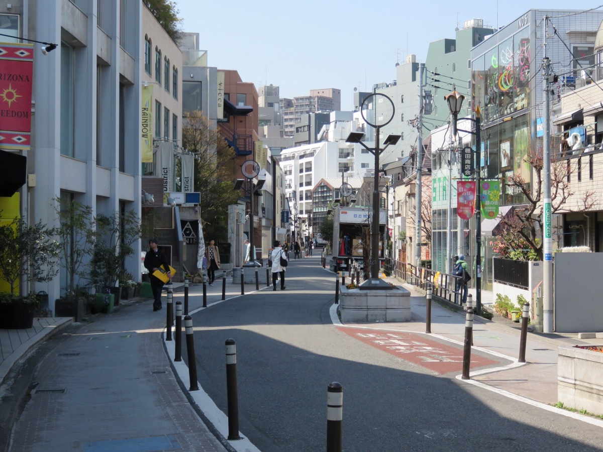
“하루에 세 권역씩 돌면 더 많이 보는 거 아닌가요?”
그렇게 단정할 근거는 없어요.
권역을 넘나들수록 이동에 쓰는 시간과 교통비가 늘기 쉬워요.
다만 명소 사이 이동 시간은 조사하지 못해서 분 단위로 적지 않았어요.
출발 전에 지도 앱에서 여행 날짜 기준으로 확인해 보세요.
3박 4일 일정은 어떻게 나눌까요? 일차별 예시예요
하루 한 권역씩 묶고,
셋째 날은 쓰키지·팀랩과 디즈니 중 하나를 고르는 구성이에요.
아래 표는 공식 자료와 여행 기록을 조합해 저희가 짠 예시예요.
어떤 소스도 이 일정을 그대로 내놓지는 않았고, 공식 추천 코스도 아니에요.
| 일차 | 구성 | 이렇게 놓은 이유 |
|---|---|---|
| 1일차 | 도착 후 아사쿠사·우에노, 저녁에 스카이트리 | 스카이라이너가 우에노·닛포리로 들어가요. 아사쿠사역에서 센소지까지 도보 약 5분이에요. |
| 2일차 | 오전 메이지 신궁, 오후 하라주쿠·캣 스트리트, 해질 무렵 시부야 스카이 | 메이지 신궁은 11월 16:10, 12월 16:00에 문을 닫아요. |
| 3일차 A | 오전 쓰키지 장외시장, 오후 팀랩, 저녁 긴자나 도쿄역 야경 | 쓰키지 상점 권장 시간은 9:00~14:00이에요. 팀랩은 2시간 안팎을 잡아요(소스 자체 추정). |
| 3일차 B | 디즈니 종일 | 입장권이 날짜 지정이고 매진될 수 있어요. |
| 4일차 | 오전 쇼핑이나 산책 후 공항 | 나리타는 출발 최소 2시간 전 도착을 안내해요. 면세 절차는 체크인 전에 해요. |
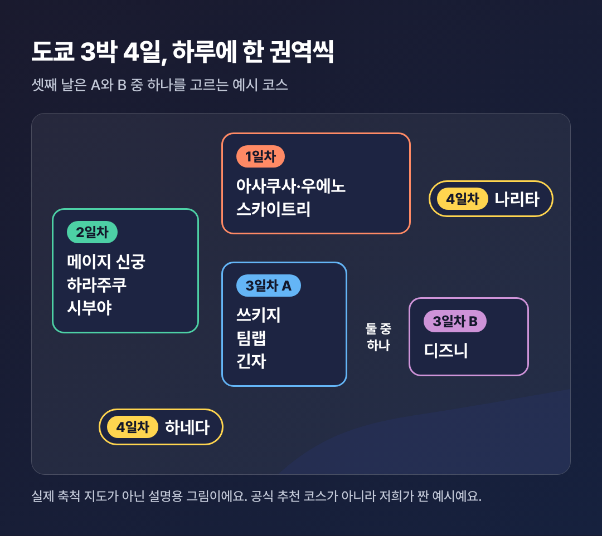
하루 한 권역으로 묶고, 셋째 날만 취향에 따라 고르는 구성이에요.
그래서 저희는 명소 수가 아니라 문 닫는 시각과 쉬는 날부터 맞췄어요.
유명한 곳도 닫혀 있으면 일정에서 빠지는 칸이 되니까요.
1일차: 아사쿠사·우에노와 스카이트리
나리타로 들어오면 스카이라이너가 서는 우에노·닛포리가 편해요.
숙소도 입출국 공항에 맞추면 첫날과 마지막 날 이동이 줄어요.
이건 저희 해석이고, 공식 권고는 아니에요.
스카이트리 운영 시간은 날짜별 달력을 따르니 도착 시각과 맞춰 보세요.
센소지의 입장료와 본당 시간은 공식 자료로 확인하지 못했어요.
본당 참배가 목적이라면 현지 안내를 먼저 보는 편이 나아요.
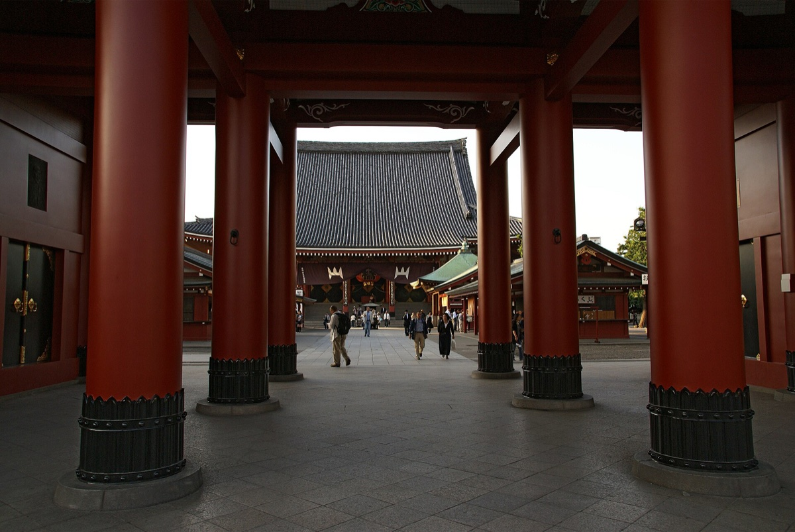
2일차: 메이지 신궁에서 시부야까지
메이지 신궁은 무료예요.
11월은 6:10~16:10, 12월은 6:40~16:00에 열어요.
그래서 오전에 먼저 넣었어요.
12월 일몰은 16:30 무렵이라는 안내가 있어요.
시부야 스카이는 이 시각을 기준으로 시간대를 고르면 돼요.
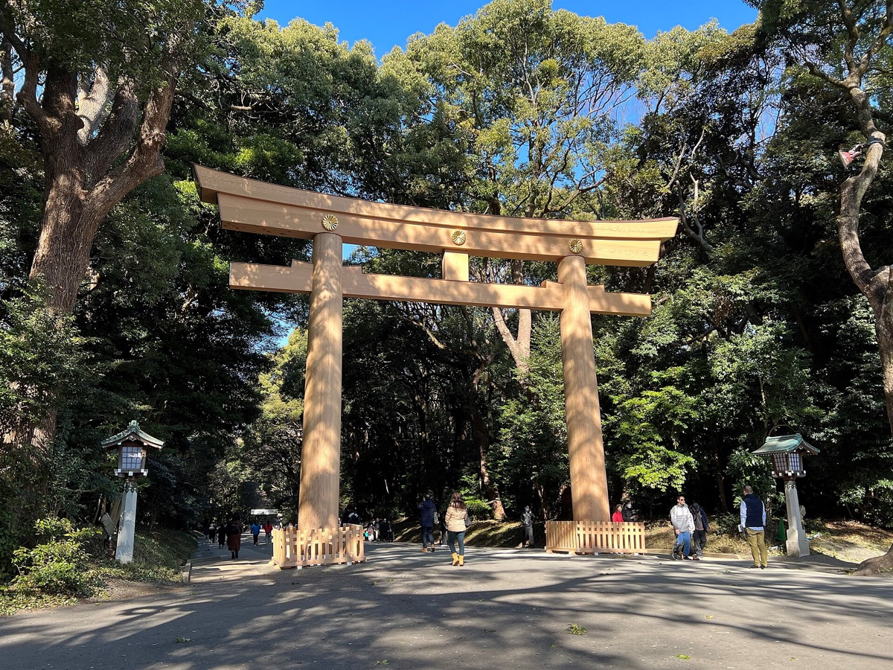
3일차: 쓰키지·팀랩 또는 디즈니
쓰키지 장외시장은 일요일과 일부 수요일에 쉬는 상점이 많아요.
대부분 엔화 현금만 받고, 시장 안에 환전소가 없어요.
큰 짐과 유모차는 숙소에 두고, 샌들과 하이힐은 피하라고 안내해요.
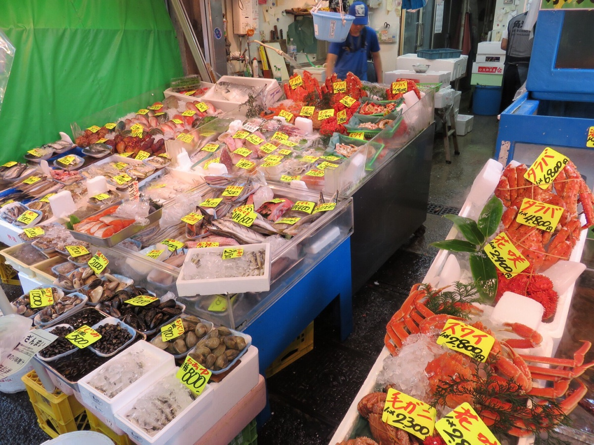
디즈니를 넣으면 셋째 날은 다른 일정 없이 하루를 다 쓰는 편이에요.
둘 중 하나를 고르는 일이지, 둘 다 넣는 일이 아니에요.
4일차: 공항 시간부터 거꾸로 잡아요
마지막 날은 쇼핑보다 공항 시각을 먼저 정하는 날이에요.
면세품이 있다면 체크인 전에 세관 절차가 들어가요.
11~12월이라면 달력에 적어 둘 것
메이지 신궁 외원 은행나무 길은 11월 말이 절정이라고 소개돼요.
Time Out은 11월 22~30일, 16:30~19:30 라이트업을 표시했어요.
다만 같은 글에 ‘2026년 일정 미발표’라고 적혀 있어서 추정치로 봐야 해요.
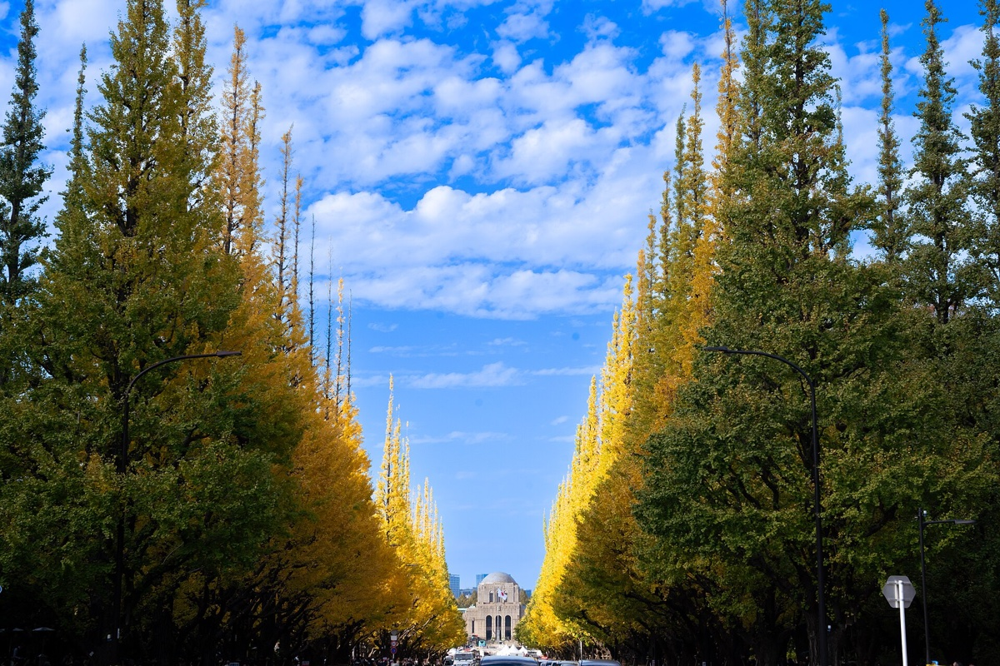
나리타와 하네다, 시내까지 무엇을 타야 할까요?
나리타는 우에노·닛포리가 숙소면 스카이라이너를,
도쿄역·신주쿠·시부야로 간다면
나리타 익스프레스(N'EX)를 먼저 봐요.
하네다는 케이큐와 도쿄 모노레일이 기본 선택지예요.
나리타공항에서 시내로
요금은 성인 편도 통상 기준이고, 대부분 2026년 10월 확인 자료예요.
N'EX와 리무진버스는 공식 페이지를 직접 읽지 못해서 재인용 값을 옮겼어요.
방문 전 공식 사이트에서 다시 확인해 보세요.
| 수단 | 요금 | 소요 시간 |
|---|---|---|
| 스카이라이너, 우에노·닛포리 | 2,580엔, IC 2,567엔 | 약 41분 |
| N'EX, 도쿄역 | 3,140엔 | 최단 53분 |
| N'EX, 신주쿠·시부야·시나가와 | 3,330엔 | 신주쿠까지 약 1시간 24분 |
| 리무진버스, 도쿄역 | 3,100엔 | 약 1시간 40분 |
| 리무진버스, 신주쿠·시부야 | 3,600엔 | 미확인 |
스카이라이너 요금은 소스마다 달랐어요.
게이세이 영문 요금표는 2,470엔,
japan-guide.com은 2,510~2,780엔이에요.
여기서는 게이세이 FAQ와 구매 안내가 일치하는 2,580엔을 썼어요.
왕복 할인도 살펴볼 만해요.
- N'EX 도쿄 왕복권: 비일본 여권 소지자용으로 왕복 5,200엔, 14일 유효예요. 일반 요금과의 차이는 신주쿠 왕복 1,460엔, 도쿄역 왕복 1,080엔이에요.
- 스카이라이너 할인권: 외국인 대상 편도 2,310엔, 왕복 4,500엔이라는 안내가 있어요. 금액과 구매 자격은 게이세이 공식 페이지에서 확인하지 못했으니 구매 전에 확인해 보세요.
- N'EX 지정석 요금: 비수기에 200엔 낮고, 성수기에 200엔 높아요.
스카이라이너를 탈 때 알아 둘 점은 셋이에요.
- 표 구입: 전석 지정이고 승차권은 출발 한 달 전부터 팔아요. 스카이라이너권 없이 타면 성인 300엔이 추가돼요.
- 결제: 신용카드는 스카이라이너권과 결합권에만 써요. 다른 승차권은 엔화 현금이 필요하니 1층 도착 로비에서 준비해 두는 편이 나아요.
- 막차: 나리타발 막차는 평일 23:00, 주말·공휴일 22:40이고 첫차는 7:23이에요(2026년 10월 28일 확인). 늦은 편이라면 시각표를 다시 봐요.
11월 7일에 움직인다면 하나 더 확인해야 해요.
이날 N'EX가 도쿄~신주쿠 구간을 운행하지 않는다는 안내가 있어요.
검색 요약으로만 확인한 내용이니, JR동일본 공지를 직접 봐 주세요.
하네다공항에서 시내로
하네다 쪽 요금은 기준 시점이 서로 달라서 함께 적었어요.
| 수단 | 요금 | 소요 시간 | 기준 |
|---|---|---|---|
| 케이큐, 시나가와 | 330엔 | 약 15분 | 2025년 5월, 2026년 요금 미확인 |
| 도쿄 모노레일, 하마마쓰초 | 520엔, IC 519엔 | 약 15~20분 | 공식 요금표 날짜 미확인 |
| 리무진버스, 도쿄역 | 1,200엔 | 40~55분 | 요금 2026년 10월, 시간 2025년 5월 |
| 리무진버스, 시부야 | 1,300엔 | 미확인 | 2026년 10월 |
| 리무진버스, 신주쿠·나카노 | 1,400엔 | 약 40분(교통 상황 영향) | 2026년 10월 |
| 심야·새벽 접근 버스 | 2,800엔 | 미확인 | 2026년 10월 |
케이큐는 시나가와에서 JR 야마노테선과 만나고,
모노레일은 하마마쓰초에서 JR 야마노테선과 연결돼요.
케이큐는 지하철 아사쿠사선으로도 이어져요.
하네다~신주쿠 리무진은 공식 시간표 일부에 2,800엔이 보인대요.
심야·새벽 상품 요금일 수 있지만 확정하지 못했어요.
늦은 시각에 도착한다면 공식 사이트의 금액을 확인해 보세요.
저희 해석으로는 항공권 차이가 크지 않다면 하네다가 유리한 편이에요.
위 표대로라면 공항 이동비가 나리타의 절반 이하인 경우가 많아요.
물론 이건 이동 구간만 본 비교이지, 여행 총비용의 비교는 아니에요.
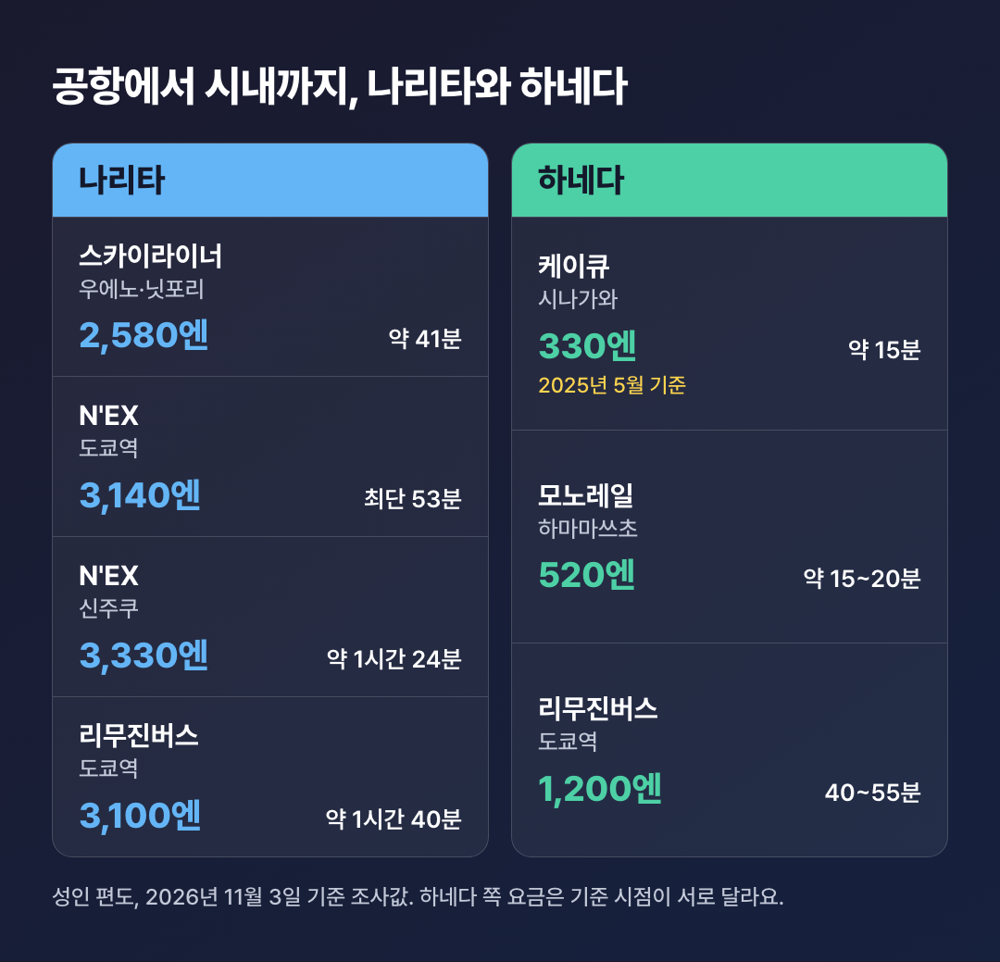
나리타는 숙소 위치로 고르고, 하네다는 연결되는 노선으로 골라요.
교통권을 사야 할까요? 하루 네 번 타는지부터 봐요
지하철을 하루 네 번 이상 탄다면 서브웨이 티켓이 유리한 편이고,
그보다 적게 탄다면 교통카드만으로 충분할 수 있어요.
japan-guide.com은 하루 약 4회는 타야 본전이라고 설명해요.
“교통권은 일단 사 두면 이득 아닌가요?”
여기서 많이들 오해하세요.
도쿄 서브웨이 티켓은 JR을 포함하지 않아요.
도쿄메트로와 도에이 지하철 전 노선만 대상이에요.
일정이 야마노테선이나 디즈니(마이하마)로 기울면 효과가 줄어드는 편이에요.
2026년 3월 14일 인상 뒤 가격은 아래와 같아요.
일부 영문 안내에 남은 800·1,200·1,500엔은 인상 전 값이에요.
| 교통권 | 성인 가격 | 범위 |
|---|---|---|
| 서브웨이 티켓 24시간 | 1,000엔 | 메트로·도에이 전 노선 |
| 서브웨이 티켓 48시간 | 1,500엔 | 메트로·도에이 전 노선 |
| 서브웨이 티켓 72시간 | 2,000엔 | 메트로·도에이 전 노선 |
| 메트로·도에이 공통 1일권 | 1,100엔 | 지하철 전 노선 |
| 도쿠나이 패스 | 870엔 | 도쿄 23구 내 JR 보통열차 자유석 1일 |
| 도쿄 프리 티켓 | 1,720엔 | 메트로, 도에이, 버스, 도영 전차, JR 도내 구간(범위는 2024년 안내) |
서브웨이 티켓의 대상은 외국인 관광객과 지정 지역 밖 거주 일본 여행자예요.
구매할 때 여권을 보여 달라는 안내도 있어요(확인 필요).
2026년 3월 25일부터는 QR 승차도 시작했어요.
미리 산 티켓의 QR을 스마트폰에 띄워 자동개찰기에 대는 방식이에요.
히비야선 나카메구로, 신주쿠선 신주쿠 등 일부 역은 역무원을 거쳐요.
교통카드는 어떤 걸 쓰면 될까요?
교통카드는 요금 할인은 없지만 대부분의 열차와 버스, 소액 결제에 써요.
단기 체류 외국인은 Welcome Suica나 Tourist PASMO를 쓸 수 있어요.
둘 다 보증금이 없고 28일간 유효해요.
일반 Suica와 PASMO는 보증금 500엔이 있어요.
그래서 저희는 교통카드를 기본으로 두고,
지하철을 많이 타는 날에만 교통권을 얹는 순서를 권해요.
숫자로 한 번 볼게요: 묶음권이 언제 이득일까요?
가정
A씨는 설명을 위한 가상 인물이고, 이 사례는 실제 여행 결과가 아니에요.
요금은 위에서 정리한 조사값이고, 일정만 가상이에요.
A씨는 나리타로 왕복하고 우에노 근처에 묵어요.
지하철도 많이 탈 계획이에요.
스카이라이너 왕복과 서브웨이 72시간권을 따로 사면 이렇게 돼요.
2,580엔 × 2 + 2,000엔 = 7,160엔
게이세이의 결합권은 왕복 기준 72시간형이 5,480엔이에요.
7,160엔 − 5,480엔 = 1,680엔
A씨 조건에서는 묶음권이 1,680엔 덜 들어요.
그런데 이 숫자를 모든 여행자의 절약액이라고 부르면 안 돼요.
72시간은 사흘치 시간일 뿐이고, 3박 4일 전체를 덮는다는 뜻은 아니에요.
디즈니 날처럼 지하철을 덜 타는 날이 끼면 본전이 멀어져요.
결합권 가격은 공식 자료에 날짜가 없어서 구매 전 확인이 필요해요.
교통권은 할인 상품이 아니라 탑승 횟수에 거는 선택이에요.
어디를 미리 예약해야 할까요? 디즈니와 시부야 스카이부터예요
날짜나 시간대에 따라 값이 달라지는 곳부터 잡아요.
디즈니, 시부야 스카이, 팀랩이 여기에 해당해요.
스카이트리는 현장 구매에 장당 500엔이 더 붙어요.
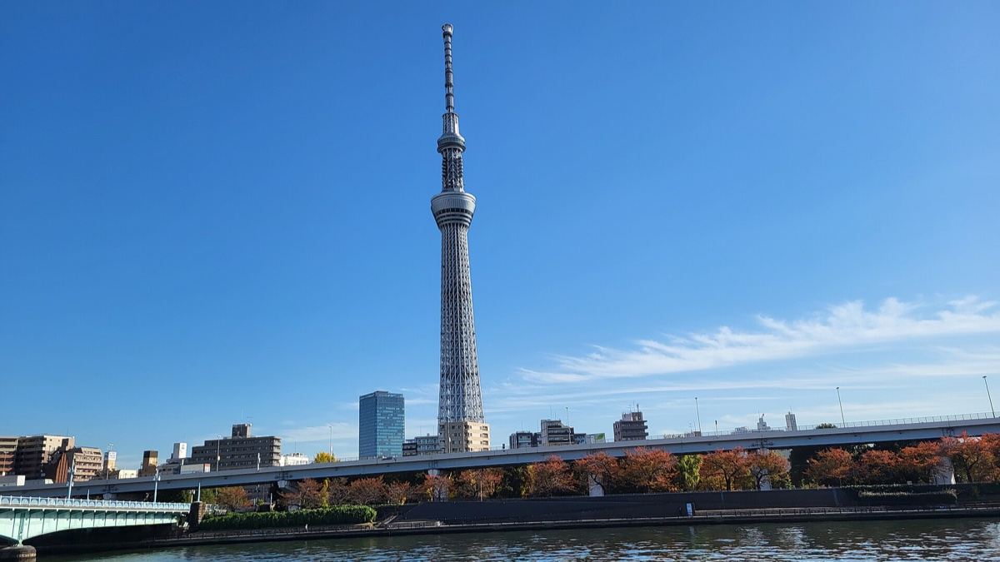
성인 요금 기준이고, 공식 페이지를 읽지 못한 항목은 표에 적었어요.
그런 항목은 방문 전 공식 사이트에서 다시 확인해 보세요.
| 장소 | 성인 요금 | 예약·운영 | 자료 한계 |
|---|---|---|---|
| 스카이트리 350층 | 1,800엔부터 | 현장 구매 시 장당 500엔 추가 | 날짜별 실제 요금 미확인 |
| 스카이트리 350+450층 | 3,000엔부터 | 온라인·편의점 구매 가능 | 날짜별 실제 요금 미확인 |
| 시부야 스카이 10:00~14:59 입장 | 온라인 2,700엔, 현장 3,000엔 | 10:00~22:30, 최종 입장 21:20, 1월 1일 휴무 | 2차 자료, 공식 티켓 표 미확인 |
| 시부야 스카이 15:00~21:20 입장 | 온라인 3,400엔, 현장 3,700엔 | 일몰이 이 시간대에 들어요 | 2차 자료, 공식 티켓 표 미확인 |
| 팀랩 보더리스(아자부다이힐스) | 3,400엔부터, 변동 요금 | 현장 구매 시 200엔 추가 | 2차 자료, 공식 본문 미확인 |
| 팀랩 플래닛(도요스) | 3,800엔부터, 변동 요금 | 30분 단위 사전 예약, 현장 판매 없음 | 2차 자료, 공식 본문 미확인 |
| 디즈니 1일권 | 8,900~12,400엔, 날짜별 | 공식 판매는 입장 2개월 전 14:00 시작 | 2차 자료, 공식 달력 미확인 |
| 메이지 신궁 | 무료 | 11월 6:10~16:10, 12월 6:40~16:00 | 공식 확인 |
그래서 저희는 요금을 외우기보다 예약이 열리는 순서부터 보길 권해요.
- 디즈니: 입장 2개월 전 14:00에 공식 판매가 시작된다고 안내돼요. 날짜 지정이고 하루 판매 한도에 닿으면 판매가 멈춰요.
- 팀랩: 주말과 저녁은 보더리스 기준 2~3주 전 예약을 권하는 글이 있어요. 소스 자체의 조언이고, 공식 기준은 아니에요.
- 시부야 스카이: 2주 전 자정에 열린다는 소스가 둘이고, 약 4주 전이라는 글도 있어요. 공식 확인을 못 한 값이니 한 달 전부터 예약 화면을 살펴보세요.
- 스카이트리: 온라인으로 사서 현장 추가금을 피해요. 450층까지 볼 생각이면 묶음권이 현장 추가보다 저렴해요. 2026년 4월 입장 절차가 바뀌었다는 언급도 있지만 내용을 확인하지 못했으니 구매 화면의 안내를 먼저 읽어 보세요.
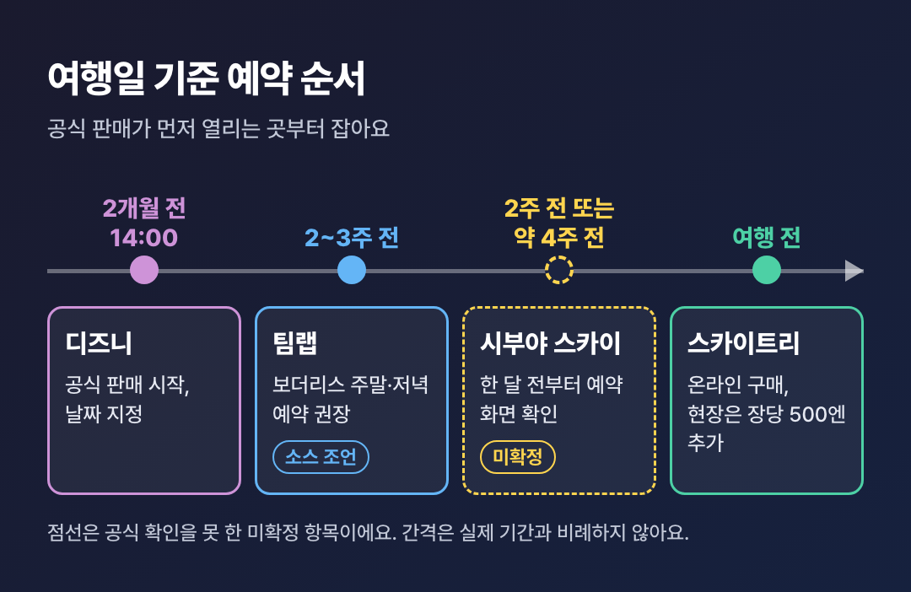
공식 판매가 먼저 열리는 곳부터, 미확정인 곳은 넉넉히 앞서서 살펴봐요.
디즈니: 요금은 방문 전 공식 사이트에서 확인해요
공식 티켓·캘린더 페이지를 읽지 못해서 2차 자료의 값을 옮겼어요.
11월 평일 일부는 9,900엔, 10~12월 다수 날짜는 10,900엔이에요.
일부 일요일과 연말연시는 11,900엔, 일부 토요일과 성수일은 12,400엔이에요.
성인 최저가도 8,900엔, 8,400엔, 7,900엔으로 소스마다 달랐어요.
방문 전 공식 사이트에서 여행 날짜의 값을 꼭 확인해 보세요.
주니어(12~17세)는 7,400엔부터, 어린이(4~11세)는 5,300엔부터예요.
유료 프리미어 액세스는 2025년 기준 놀이기구당 1,500~2,500엔이었어요.
2026년 가격과 해외 카드 결제 가능 여부는 확인하지 못했어요.
시부야 스카이: 시간대가 곧 가격이에요
15시를 기준으로 온라인 요금이 2,700엔과 3,400엔으로 나뉘어요.
옥상은 강풍, 낙뢰, 폭우 때 닫힐 수 있고 실내층은 계속 운영돼요.
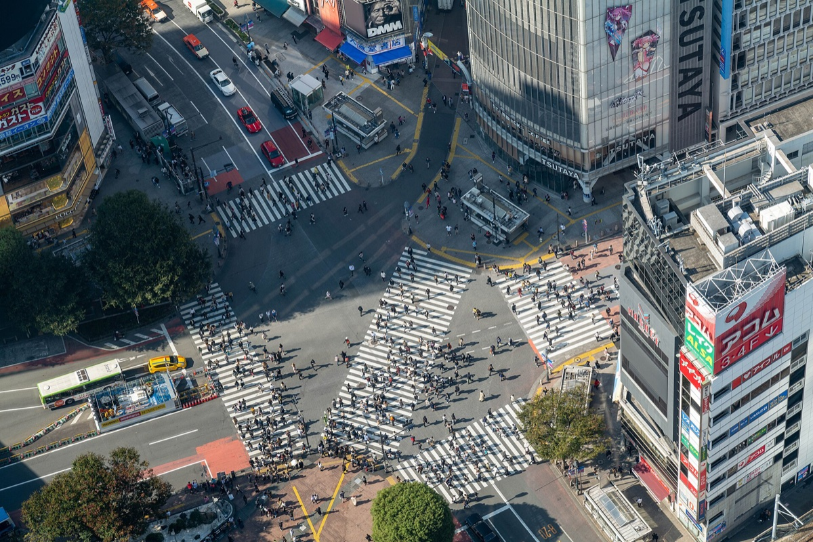
공식 사이트가 2024년 7월부터 많은 해외 카드를 거절해 왔대요.
다만 이건 제휴 수익을 내는 사이트의 설명이에요.
결제 단계에서 직접 확인해 보세요.
팀랩: 휴관일부터 봐요
두 곳 다 요금이 날짜별로 움직여서 ‘부터’로만 적었어요.
영업 시간도 날짜마다 다르고, 공식 페이지 본문을 읽지 못했어요.
- 보더리스: 2026년 휴관일로 11월 24일, 12월 8일 등 일부 화요일이 있어요. 공식 구매분은 날짜 변경이 3회 가능하다고 안내돼요.
- 플래닛: 휴관일로 11월 5일, 12월 3일 등이 있어요. 환불은 되지 않고, 날짜 변경은 입장 2시간 전까지 최대 3회예요.
11월부터 바뀐 일본 면세, 어떻게 돌려받나요?
2026년 11월 1일 구매분부터 일본 면세는 리펀드 방식이에요.
세금까지 내고 산 뒤, 출국 때 세관 확인을 받고 돌려받아요.
전환 기간은 없고, 수하물을 맡기기 전에 절차를 끝내야 해요.
호텔 보증금으로 생각하면 쉬워요.
먼저 맡기고, 조건을 지킨 것이 확인되면 돌려받는 구조예요.
다만 이건 이해를 돕는 비유이지, 법적으로 보증금이라는 뜻은 아니에요.
“예전처럼 계산대에서 여권만 보여 주면 되는 거 아닌가요?”
그렇지 않아요.
결제 금액부터 달라지고, 진짜 관문은 매장이 아니라 공항이에요.
일본 세관과 관광청 안내를 순서대로 옮기면 네 단계예요.
- 구매: 면세점에서 세금 포함 가격으로 결제해요. 같은 매장 하루 구매액이 세금 제외 5,000엔 이상이어야 해요.
- 출국 전 수속: 구입 후 90일 이내에 출국하고, 공항의 면세 수속 단말기에 여권을 제시해요.
- 판정: 녹색이면 끝이고, 빨간색이면 지정 세관 검사 장소에서 물품을 확인받아요.
- 환급: 세관 확인 뒤 소비세 상당액을 돌려받아요. 공항 현금 단말기는 엔화로 지급하고, 신용카드·QR·계좌이체는 구매 때 안내받은 대로 온라인으로 진행해요.
어느 환급 방식을 쓸 수 있는지는 매장마다 달라요.
그래서 저희는 결제할 때 환급 방식과 수수료부터 물어보길 권해요.
수수료가 있는지, 얼마인지는 확인하지 못했거든요.
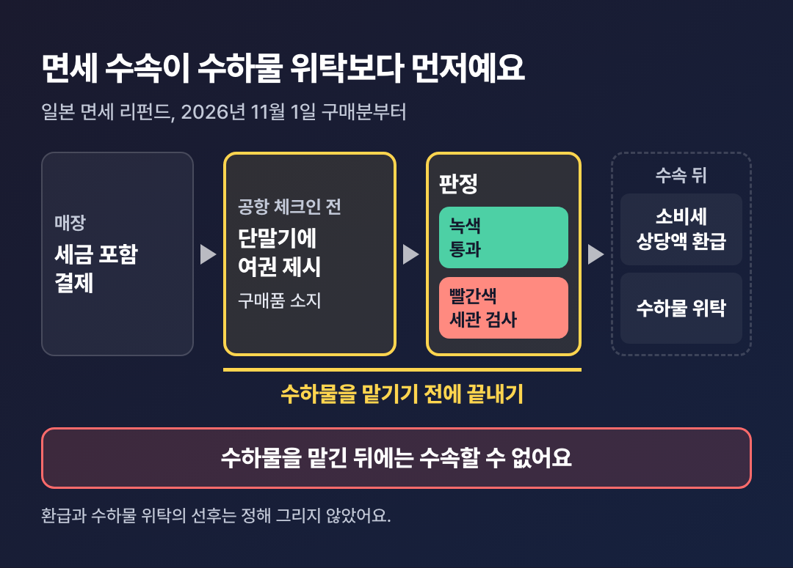
체크인 전에 세관 절차를 끝내고, 그다음에 짐을 맡겨요.
면세 리펀드에서 흔한 실수
놓치기 쉬운 점은 다섯 가지예요.
- 면세품을 먼저 캐리어에 넣어 부치는 경우. 수하물을 맡긴 뒤에는 절차를 밟을 수 없고, 맡긴 짐을 되찾아 처리할 수도 없어요.
- 영수증의 물건 하나쯤은 빠져도 된다고 생각하기. 하나만 빠져도 그 영수증 전체가 환급 대상에서 빠져요.
- 일본에서 쓰거나 먹은 물품도 단말기에 올리는 경우. 이 물품은 제외 대상이고, 단말기를 쓰지 말고 세관 직원에게 신고해야 해요.
- 평소 시간에 맞춰 공항에 가는 경우. 절차를 하다 비행기를 놓쳐도 세관과 항공사는 보상하지 않아요.
- 환급받고 물품을 일본 밖으로 내보내지 않는 경우. 세금 추징과 가산이 있을 수 있어요.
제외되는 것도 있어요.
금·백금 지금과 원래 소비세가 면제되는 품목은 대상이 아니에요.
출국 때 직접 들고 나갈 수 있는 수량만 대상이고, 별송은 이미 끝났어요.
일본 안에서 환승하면 일본을 마지막으로 떠나는 공항에서 절차를 밟아요.
합산 기준도 하나 짚어 둘게요.
일반 기준은 같은 매장 하루 구매액이에요.
관광청 안내에는 같은 날 여러 매장 합산이 가능한 카운터도 언급돼요.
조건은 확인하지 못했으니, 합산은 매장에 물어보고 판단해 보세요.
숫자로 보면 예산이 달라져요
가정
금액은 모두 설명을 위한 가상 숫자이고, 실제 가격이나 세율이 아니에요.
A씨가 세금 제외 3만 엔을 쓰려 하고, 세금분이 3,000엔이라고 해 볼게요.
30,000엔 + 3,000엔 = 33,000엔
A씨의 결제 금액은 3만 엔이 아니라 3만 3,000엔이에요.
그러니까 카드 한도와 현금은 세금분까지 넉넉히 잡아 두는 편이 나아요.
다만 수수료를 확인하지 못해서 3,000엔 전액이 돌아온다는 보장은 없어요.
저희 해석으로는 여행 중 먹을 간식은 면세 결제에 섞지 않는 편이 안전해요.
공항에서는 단말기와 Visit Japan Web 중 하나를 써요
단말기가 기본이고, 7개 공항에서는 스마트폰 수속도 돼요.
나리타, 하네다, 간사이, 주부, 후쿠오카, 신치토세, 나하가 해당해요.
보안 검색 전 전용 Wi-Fi 구역에서만 되고, 사전 등록이 필요해요.
세관 페이지에 나온 네트워크 이름은 Customs_WiFi_For_TaxRefund예요.
잘 안 되면 키오스크로 가면 돼요.
하네다는 단말기 위치와 시간이 공개되어 있어요.
수속 단말기는 3층 보안 검사 전, 현금 단말기는 보안 검사 뒤예요.
1터미널에는 서비스가 없어요.
| 하네다 | 수속 단말기 | 현금 수령 단말기 |
|---|---|---|
| 2터미널 | 6:00~26:00, 8대 | 6:45~25:30, 5대 |
| 3터미널 | 24시간, 13대 | 24시간, 5대 |
나리타는 출발 로비 키오스크나 Visit Japan Web을 쓰고,
공항 내 현금 환급 키오스크가 있어요.
나리타는 출발 최소 2시간 전 도착을 안내해요.
이 시간에 면세 절차가 포함되는지는 분명하지 않아요.
몇 시간 전이 적당한지 공식 수치도 없어요.
시행 사흘째라 공항 혼잡을 다룬 보도도 찾지 못했어요.
면세품이 많다면 그보다 일찍 가는 편이 낫다는 정도만 말씀드릴 수 있어요.
수속 단말기는 체크인 전 동선에서, 현금 단말기는 그 뒤에서 찾아요.
귀국할 때 한국 세관 면세 한도는 얼마인가요?
기본 면세 한도는 1인 미화 800달러예요.
일본에서 소비세를 돌려받는 일과 한국 면세 한도는 별개예요.
일본에서 면세로 샀다고 한국 세관 신고가 면제되지는 않는다고 봐요.
한국 관세청 현행 안내 기준은 아래와 같아요.
| 항목 | 면세 범위 |
|---|---|
| 기본 | 1인 미화 800달러 |
| 농축수산물 | 품목당 5kg, 총 40kg, 해외 취득가 10만 원 이내 |
| 술 | 2L 이하이면서 총 400달러 이하(19세 미만 제외) |
| 담배 | 궐련 200개비, 전자담배 니코틴 1% 미만 용액 20ml(19세 미만 제외) |
| 향수 | 100ml |
향수 60ml나 술 2병 조건을 적은 2024년 자료도 보여요.
그래서 저희는 관세청 페이지 값을 썼어요.
한도를 넘으면 자진신고로 관세 30%가 감면돼요.
미신고로 적발되면 납부세액의 40% 가산세가 붙어요.
2년 내 2회 이상이면 60%예요.
2026년에 달라진 비용과 규칙은 무엇일까요?
출국세, 지하철 교통권, 시부야 쓰레기 투기 벌금이 대표적이에요.
겁낼 변화라기보다 예산표의 숫자를 고치면 되는 변화에 가까워요.
그래서 저희는 항목별로 내가 낼 돈인지, 지킬 규칙인지만 나눠 보길 권해요.
- 출국세: 2026년 7월 1일부터 1,000엔에서 3,000엔으로 올랐어요. 항공권이나 승선권 값에 포함되고, 2세 미만은 면제예요.
- JR동일본 운임: 2026년 3월 14일 평균 7.1% 인상했다는 내용을 검색 요약으로 봤어요. 구체 금액은 확인하지 못했어요.
- 숙박세: 도쿄도 현행은 1인 1박 1만 엔 미만 면제, 1만~1만 5천 엔 미만 100엔, 1만 5천 엔 이상 200엔이에요. 2027년 4월 1일 숙박분부터는 정률로 바뀌어요.
- 시부야 쓰레기 투기: 2026년 6월부터 적발되면 2,000엔 즉석 벌금을 받아요. 적용 범위는 구청 원문을 확인하지 못했어요.
- 시부야 노상 음주: 2024년 10월부터 시부야역 주변 18:00~05:00 금지라는 보도가 있어요. 검색 요약으로만 봤고, 현재 구역과 내용은 확인이 필요해요.
- 전자도항인증(JESTA): 일본 정부는 2029년 3월 이전 시행을 목표로 해요. 기준일 현재 시행 소식은 찾지 못해서 이번 여행 준비물로 넣지 않았어요.
자주 받는 질문
Q. 면세품을 캐리어에 넣어 부쳐도 되나요?
세관 절차를 끝내기 전에는 안 돼요.
구매품을 모두 가지고 있는 상태로 절차를 밟아야 하거든요.
맡긴 뒤에는 되찾아 처리할 수도 없어요.
공항에서는 단말기가 먼저이고, 체크인이 그다음이에요.
Q. 갤럭시에서도 모바일 Suica를 쓸 수 있나요?
지금은 실물 카드를 전제로 준비하는 편이 안전해요.
해외판 일부 갤럭시 지원은 2027년 상반기 예정이라는 기사가 있어요.
Welcome Suica Mobile 앱은 창구 없이 발급·충전돼요.
iPhone용이라는 내용은 2025년 자료의 검색 요약으로만 봤어요(확인 필요).
한국 카드의 Apple Pay 충전 가능 여부도 확인하지 못했어요.
Q. 3박 4일에 디즈니를 넣어도 되나요?
넣을 수 있지만, 하루를 통째로 쓴다고 보는 편이 나아요.
이 글의 예시라면 3일차의 쓰키지·팀랩이 빠져요.
날짜 지정 입장권이라 여행 일정을 먼저 정한 뒤 사는 순서를 권해요.
요금은 날짜마다 다르니 방문 전 공식 사이트에서 확인해 보세요.
Q. 12월에 가면 일루미네이션 일정을 믿고 넣어도 되나요?
아직은 일러요.
2026년 일정은 공식으로 확인하지 못했어요.
비공식 글의 날짜만 보였고, 개최 일정이 미확정인 행사도 있어요.
일정의 중심에 두지 말고, 공식 발표가 나오면 저녁 칸에 얹어 보세요.
코스는 권역으로 나누고, 면세는 순서로 지켜요.
이 두 가지만 섞지 않아도 출발 전 준비가 훨씬 차분해져요.
도쿄 여행을 준비하고 계시다면, 오늘은 딱 한 가지만 해 보세요.
달력을 열고 여행 날짜 옆에
가고 싶은 곳의 휴관일과 문 닫는 시각만 적어 두면 돼요.
일정보다 쉬는 날을 먼저 적는 것,
그게 3박 4일을 덜 헤매는 첫걸음이에요.
참고:
- 일본 세관: 면세 리펀드 제도 안내
- 일본 세관: Visit Japan Web 온라인 수속
- 일본 관광청: 리펀드 방식 안내
- 일본정부관광국(JNTO): 새 면세 제도 안내
- 하네다공항: 택스 리펀드
- 나리타국제공항: 국제선 출발 절차
- 도쿄도: 지하철 공통권 가격 개정 발표
- GO TOKYO: 교통권과 IC카드
- GO TOKYO: 도쿄 3일 코스
- 게이세이 전철: 스카이라이너 FAQ
- Japan Travel Kit: 스카이라이너와 N'EX 비교(제휴 가이드)
- 도쿄 스카이트리: 티켓
- 메이지 신궁: 방문 안내
- 쓰키지 장외시장: 쇼핑 안내
- Disney Park Nerds: 도쿄 디즈니랜드 요금(2차 자료)
- 대한민국 관세청: 여행자 휴대품 통관
출발 전에는 이 글의 요금과 예약 일정을
공식 사이트에서 여행 날짜 기준으로 다시 확인해 보세요.
이 글은 2026년 11월 3일 기준이거든요.
면세 절차도 위 참고 링크의 일본 세관·관광청 안내로
한 번 더 읽어 두면 돼요.
사진 출처
- 하라주쿠 캣 스트리트: Aw1805, CC BY-SA 3.0, https://commons.wikimedia.org/wiki/File:Cat_Street,_Ura_Harajuku_1.jpg, https://creativecommons.org/licenses/by-sa/3.0
- 아사쿠사 센소지: 663highland, CC BY 2.5, https://commons.wikimedia.org/wiki/File:Asakusa_sensoji08s3200.jpg, https://creativecommons.org/licenses/by/2.5
- 메이지 신궁: Asanagi, CC0, https://commons.wikimedia.org/wiki/File:Meiji_Shrine_Minami-sando-torii_2023-01-26.jpg, http://creativecommons.org/publicdomain/zero/1.0/deed.en
- 쓰키지 장외시장: Aw1805, CC BY-SA 3.0, https://commons.wikimedia.org/wiki/File:Tsukiji_Outer_Market_2.jpg, https://creativecommons.org/licenses/by-sa/3.0
- 메이지 신궁 외원 은행나무 길: Dick Thomas Johnson, CC BY 2.0, https://commons.wikimedia.org/wiki/File:Meiji_Jingu_Gaien_Ginkgo_Festival_(53441835123).jpg, https://creativecommons.org/licenses/by/2.0
- 도쿄 스카이트리: VaneTrz20, CC0, https://commons.wikimedia.org/wiki/File:Tokyo_Skytree_in_winter.jpg, http://creativecommons.org/publicdomain/zero/1.0/deed.en
- 시부야 스크램블 교차로: Real Estate Japan, CC BY 2.0, https://commons.wikimedia.org/wiki/File:Shibuya_scramble_square_sky_view_of_crossing_(48995414042).jpg, https://creativecommons.org/licenses/by/2.0


.jpg){kind=link}

.jpg){kind=link}
위 사진은 크기를 줄인 것 외에 수정하지 않았어요.